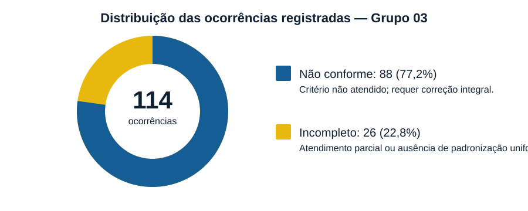
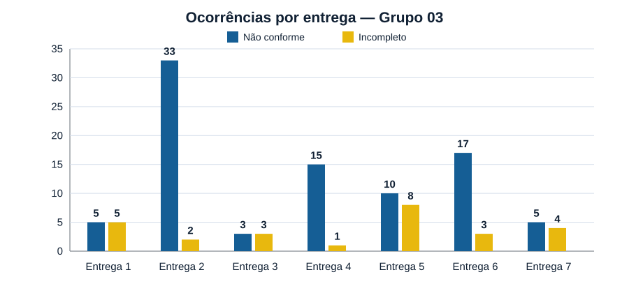

Histórico de Versão e Contribuição¶
| Data | Versão | Descrição | Autor(es) | Revisor(es) | Declaração de Uso de IA |
|---|---|---|---|---|---|
| 23/11/2026 | 1.0 |
Consolidação dos itens não conformes e incompletos encontrados na inspeção geral dos artefatos do Grupo 03, com tabelas, gráficos e encaminhamentos. | Lucas Araújo Lima | Arthur Mariani; Igor Dantas | Google Gemini: apoio na estruturação, redação, consolidação quantitativa e geração dos gráficos. |
Relato da Inspeção Geral do Grupo 03¶
1. Introdução¶
Este documento consolida os resultados da inspeção geral dos artefatos das Entregas 1 a 7 do Grupo 03, conduzida pela equipe do Grupo 05 em 23/11/2026, às 22h. A avaliação utilizou as listas de verificação versão 2.0, que organizam os critérios de desenvolvimento do projeto (D), os itens de Planejamento Geral (PG) e de conteúdo definidos no Plano de Ensino (C) e os itens elaborados pelo grupo (G).
Foram incluídos neste relato somente os critérios classificados como Não conforme ou Incompleto. A classificação Conforme também foi adotada durante a avaliação: todos os critérios avaliados das listas de verificação que não constam nas tabelas de achados como Não conforme ou Incompleto foram atendidos integralmente e, portanto, estão Conformes. Já os itens marcados como removidos ou não aplicáveis ao escopo analisado não foram avaliados e não integram as tabelas de achados nem a contagem quantitativa.
2. Método e limitações¶
A inspeção geral foi conduzida por entrega, comparando os artefatos publicados pelo Grupo 03 com os critérios aplicáveis das listas de verificação. A classificação adotada na avaliação compreendeu Conforme, Não conforme e Incompleto, conforme descrito na Tabela 1. Os itens avaliados que não foram registrados neste documento como Não conforme ou Incompleto encontram-se Conformes e, por não demandarem retrabalho, não são repetidos nas tabelas de achados.
Tabela 1: Classificação adotada na inspeção geral do Grupo 03
| Classificação | Significado nesta inspeção | Encaminhamento |
|---|---|---|
| Conforme | O critério foi integralmente atendido pelo(s) artefato(s) avaliado(s). | Não requer correção; por isso, não aparece nas tabelas de achados. |
| Não conforme | O critério não foi atendido. | Corrigir o artefato e submetê-lo a nova verificação. |
| Incompleto | O critério foi atendido apenas em parte ou não foi atendido de maneira uniforme pelos artefatos da entrega. | Completar ou padronizar os artefatos antes da nova verificação. |
Fonte: Elaborado por Inteligência Artificial.
A inspeção contou com a participação dos três integrantes designados para a atividade, conforme detalhado na Tabela 2.
Tabela 2: Participantes e registro da sessão de inspeção do Grupo 03
| Participante | Papel exercido | Data e horário |
|---|---|---|
| Lucas Araújo Lima | Inspetor e autor da consolidação | 23/11/2026, às 22h |
| Arthur Mariani | Inspetor e revisor | 23/11/2026, às 22h |
| Igor Dantas | Inspetor e revisor | 23/11/2026, às 22h |
Fonte: Elaborado por Inteligência Artificial.
Como critério de consolidação, nas fases com múltiplos artefatos correlatos, quando parte dos documentos atende ao critério e ao menos um apresenta lacuna, o resultado foi registrado como Incompleto. Para facilitar a leitura, faixas contíguas de critérios com a mesma classificação e a mesma causa (como G1–G15 e G21–G30 na Entrega 2, ou G8–G14 e G15–G21 na Entrega 6) aparecem agrupadas nas tabelas de achados com a indicação da quantidade de itens entre parênteses, sendo cada critério contabilizado individualmente nos totais quantitativos.
2.1 Gravação da inspeção geral¶
O registro audiovisual da inspeção geral do Grupo 03 está disponível em YouTube: Inspeção Geral do Grupo 03 e incorporado no Vídeo 1.
Vídeo 1: Gravação da inspeção geral dos artefatos do Grupo 03.
Fonte: Elaborado por Inteligência Artificial.
3. Visão geral dos resultados¶
Foram registradas 114 ocorrências: 88 não conformidades (77,2%) e 26 itens incompletos (22,8%). A proporção geral entre as duas classificações é apresentada no Gráfico 1.

Gráfico 1: Distribuição das ocorrências classificadas na inspeção geral do Grupo 03.
Fonte: Elaborado por Inteligência Artificial.
A distribuição das ocorrências ao longo das sete entregas pode ser visualizada no Gráfico 2 e detalhada numericamente na Tabela 3.

Gráfico 2: Quantidade de ocorrências não conformes e incompletas por entrega do Grupo 03.
Fonte: Elaborado por Inteligência Artificial.
Tabela 3: Síntese das ocorrências por entrega do Grupo 03
| Entrega | Não conforme | Incompleto | Total |
|---|---|---|---|
| 1 | 5 | 5 | 10 |
| 2 | 33 | 2 | 35 |
| 3 | 3 | 3 | 6 |
| 4 | 15 | 1 | 16 |
| 5 | 10 | 8 | 18 |
| 6 | 17 | 3 | 20 |
| 7 | 5 | 4 | 9 |
| Total | 88 | 26 | 114 |
Fonte: Elaborado por Inteligência Artificial.
4. Achados por entrega¶
4.1 Entrega 1¶
Os achados identificados na inspeção dos artefatos da Entrega 1 estão consolidados na Tabela 4.
Tabela 4: Achados da Entrega 1 — Grupo 03
| Critério | Classificação | Achado consolidado | Encaminhamento |
|---|---|---|---|
| D4 | Incompleto | No artefato de visão geral, há fonte incorreta ("elaborada por autores") e tabelas que não são chamadas no texto. | Corrigir a atribuição de fonte e referenciar todas as tabelas e imagens no corpo do texto. |
| D6 | Incompleto | O cronograma executado não apresenta as datas reais de início e fim da realização das atividades. | Registrar as datas reais de início e fim para cada atividade executada. |
| D7 | Não conforme | Não há registro de ata de reunião referente à Entrega 1. | Publicar a ata da reunião com data, horários, participantes, objetivos e atividades definidas. |
| D8 | Não conforme | Não há gravação da reunião do grupo referente à entrega. | Disponibilizar o registro em vídeo da reunião do grupo. |
| PG3 | Não conforme | O cronograma planejado não apresenta o período de gravação da apresentação das etapas. | Incluir os períodos de gravação da apresentação no cronograma planejado. |
| PG4 | Incompleto | O cronograma planejado das Entregas 5 e 6 não prevê período de revisão/ajustes nos artefatos. | Adicionar o período de revisão e ajustes também para as Entregas 5 e 6 no cronograma planejado. |
| C1 | Incompleto | A justificativa da escolha do Processo de Design está incompleta quanto aos elementos exigidos (referência, foto do texto e autor). | Completar a justificativa do Processo de Design com referência bibliográfica, recorte do texto e autoria. |
| G2 | Incompleto | A comparação dos sites avaliados não contempla integralmente todos os sites pelos mesmos critérios com pontos fortes e fracos. | Completar a tabela comparativa aplicando os mesmos critérios a todos os sites avaliados. |
| G5 | Não conforme | O Processo de Design não relaciona as entregas do projeto aos três níveis de design de Mayhew. | Explicitar o vínculo entre as entregas e os três níveis de design previstos no processo adotado. |
| G6 | Não conforme | O Processo de Design não prevê ciclos de avaliação e reprojeto até o alcance das metas de usabilidade. | Documentar os ciclos iterativos de avaliação e reprojeto com registro das decisões de design. |
Fonte: Elaborado por Inteligência Artificial.
4.2 Entrega 2¶
Os achados identificados na inspeção dos artefatos da Entrega 2 estão consolidados na Tabela 5.
Tabela 5: Achados da Entrega 2 — Grupo 03
| Critério | Classificação | Achado consolidado | Encaminhamento |
|---|---|---|---|
| D4 | Incompleto | Os artefatos da Entrega 2 apresentam tabelas e/ou imagens sem legenda, fonte ou chamada correspondente no texto. | Padronizar legendas, fontes e chamadas textuais em todos os artefatos da entrega. |
| D9 | Não conforme | Não há vídeo de apresentação na categoria "não listado" no YouTube. | Publicar e vincular o vídeo de apresentação da entrega no modo não listado. |
| C1 | Não conforme | O perfil do usuário não é definido por mais de uma técnica de elicitação e/ou ferramenta. | Utilizar e documentar mais de uma técnica para definição do perfil de usuário. |
| C2 | Não conforme | O perfil do usuário não apresenta os atributos esperados com referência bibliográfica e foto do texto. | Completar os atributos do perfil com referência e recorte da fonte utilizada. |
| C3 | Incompleto | Os grupos de atributos do capítulo 8 (idade, experiência, atitudes e tarefas primárias) estão atendidos apenas parcialmente. | Completar o perfil de usuário cobrindo todos os grupos de atributos requeridos. |
| C7 | Não conforme | Não é apresentado o Termo de Consentimento Livre e Esclarecido (TCLE) dos participantes. | Elaborar e disponibilizar o TCLE referente às atividades com participantes. |
| C11 | Não conforme | Não há uma atividade por integrante modelada em ao menos duas técnicas de especificação de tarefas. | Modelar uma atividade para cada integrante utilizando pelo menos duas técnicas (HTA, GOMS ou CTT). |
| C12 | Não conforme | Não foi evidenciada a utilização de técnica para especificar as tarefas. | Aplicar e documentar as técnicas escolhidas para especificação das tarefas. |
| G1–G15 (15 critérios) | Não conforme | Os dados de perfil do usuário (demográficos, experiência, organização, educação, tecnologia, tarefas e jargões) não foram coletados, pois as entrevistas não foram realizadas. | Executar a coleta de dados prevista junto ao público-alvo e registrar os resultados no perfil de usuário. |
| G16 | Não conforme | Os dados coletados não identificam os tipos de usuário (primário, secundário e demais stakeholders). | Classificar explicitamente os públicos identificados entre primário, secundário e stakeholders. |
| G17 | Não conforme | Não foram identificados todos os stakeholders afetados pelo sistema além dos usuários finais. | Mapear e documentar todos os stakeholders impactados pelo sistema. |
| G21–G25 (5 critérios) | Não conforme | Os aspectos éticos de pesquisa envolvendo pessoas (assinatura do TCLE, anonimato, autonomia, prevenção de viés e beneficência) não foram efetivados, pois as entrevistas não foram realizadas. | Aplicar o TCLE e garantir a execução dos procedimentos éticos durante a realização das entrevistas. |
| G26–G30 (5 critérios) | Não conforme | A técnica de entrevista (roteiro, perguntas abertas/fechadas, estruturação, aplicação individual e treinamento do entrevistador) não foi aplicada, pois as entrevistas não foram realizadas. | Planejar, preparar o roteiro e conduzir as entrevistas conforme os critérios metodológicos definidos. |
Fonte: Elaborado por Inteligência Artificial.
4.3 Entrega 3¶
Os achados identificados na inspeção dos artefatos da Entrega 3 estão consolidados na Tabela 6.
Tabela 6: Achados da Entrega 3 — Grupo 03
| Critério | Classificação | Achado consolidado | Encaminhamento |
|---|---|---|---|
| D4 | Incompleto | Há tabelas e/ou imagens sem atendimento completo de legenda, fonte e chamada no texto. | Padronizar todos os elementos visuais e suas referências textuais. |
| D8 | Não conforme | Não há gravação da reunião do grupo referente à entrega. | Disponibilizar a gravação da reunião do grupo. |
| D9 | Não conforme | Não há vídeo de apresentação na categoria "não listado" no YouTube. | Publicar e vincular o vídeo de apresentação da entrega no modo não listado. |
| C13 | Incompleto | As metas de usabilidade ou objetivos de avaliação estão apresentados de forma parcial quanto à referência e foto do texto. | Completar a definição das metas de usabilidade com referência bibliográfica e recorte da fonte. |
| C14 | Não conforme | Não é apresentada a razão da seleção das metas de usabilidade definidas para o projeto. | Justificar a escolha de cada meta de usabilidade com base no contexto e nos usuários do projeto. |
| C15 | Incompleto | O Guia de Estilo está incompleto quanto à documentação, referência bibliográfica e foto da fonte. | Completar a estrutura do Guia de Estilo e incluir referência e recorte da fonte. |
Fonte: Elaborado por Inteligência Artificial.
4.4 Entrega 4¶
Os achados identificados na inspeção dos artefatos da Entrega 4 estão consolidados na Tabela 7.
Tabela 7: Achados da Entrega 4 — Grupo 03
| Critério | Classificação | Achado consolidado | Encaminhamento |
|---|---|---|---|
| D4 | Incompleto | Há tabelas e/ou imagens que não atendem integralmente à exigência de legenda, fonte e chamada no texto. | Padronizar a identificação e a chamada textual de todos os elementos visuais. |
| D9 | Não conforme | Não há vídeo de apresentação na categoria "não listado" no YouTube. | Publicar e vincular o vídeo não listado da entrega. |
| C3 | Não conforme | O planejamento não descreve os objetivos da avaliação conforme o esperado. | Explicitar os objetivos da avaliação no planejamento. |
| C5 | Não conforme | Não são detalhadas as questões práticas da avaliação (recrutamento, quantidade de usuários, equipamentos, prazos, orçamento e mão de obra). | Documentar integralmente as questões práticas da avaliação. |
| C7 | Não conforme | O planejamento não define a estrutura do relatório de resultados da avaliação. | Incluir a estrutura prevista para o relato dos resultados. |
| C8 | Não conforme | Não há cronograma (data e horário) e local definidos para a avaliação do Storyboard e da Análise de Tarefas. | Registrar datas, horários e locais previstos para as sessões de avaliação. |
| C9 | Não conforme | Os desenhos do Storyboard não estão relacionados às especificações do artefato de Análise de Tarefas. | Vincular explicitamente cada storyboard à respectiva análise de tarefas. |
| C10 | Não conforme | A quantidade de storyboards não corresponde à quantidade de integrantes do grupo. | Garantir a produção e publicação de um storyboard por integrante. |
| C11 | Não conforme | Não há definição do teste-piloto nem data para sua realização antes da avaliação, com referência e foto. | Definir o teste-piloto, agendar sua data prévia e incluir referência com recorte da fonte. |
| C12 | Não conforme | O planejamento não deixa claro que o resultado do teste-piloto não será apresentado no resultado da avaliação. | Registrar explicitamente a separação entre os dados do teste-piloto e os resultados finais. |
| C13 | Não conforme | Não estão especificados os itens que o avaliador deve realizar ou anotar durante a avaliação. | Definir o roteiro de observação e registro de problemas pelo avaliador. |
| G1 | Não conforme | O planejamento não seleciona ao menos um objetivo formal de avaliação. | Definir pelo menos um objetivo claro de avaliação segundo o referencial adotado. |
| G7 | Não conforme | O planejamento não define o cronograma completo das atividades de avaliação (recrutamento, piloto, coleta, análise e entrega). | Estruturar o cronograma completo de todas as etapas da avaliação. |
| G22 | Não conforme | O planejamento da avaliação da Análise de Tarefas não prevê a comparação entre os caminhos dos modelos e a execução real dos participantes. | Incluir a comparação entre os caminhos previstos nos modelos e o desempenho observado. |
| G23 | Não conforme | O planejamento não define o perfil e a quantidade de participantes com justificativa. | Definir perfil, quantidade de participantes e justificativa metodológica. |
| G25 | Não conforme | O planejamento não especifica os limites de duração previstos para as tarefas e para a sessão completa. | Estabelecer o tempo estimado por tarefa e a duração total da sessão. |
Fonte: Elaborado por Inteligência Artificial.
4.5 Entrega 5¶
Os achados identificados na inspeção dos artefatos da Entrega 5 estão consolidados na Tabela 8.
Tabela 8: Achados da Entrega 5 — Grupo 03
| Critério | Classificação | Achado consolidado | Encaminhamento |
|---|---|---|---|
| D4 | Incompleto | Há tabelas e/ou imagens sem legenda, fonte ou chamada no texto. | Padronizar todos os elementos visuais e suas referências textuais. |
| D7 | Não conforme | Não há ata(s) de reunião referente(s) à entrega. | Publicar as atas de reunião com todos os campos obrigatórios. |
| D8 | Não conforme | Não há gravação da reunião do grupo referente à entrega. | Disponibilizar o registro em vídeo da reunião. |
| D9 | Não conforme | Não há vídeo de apresentação na categoria "não listado" no YouTube. | Publicar e vincular o vídeo não listado da entrega. |
| G1 | Incompleto | O planejamento não informa de forma completa qual protótipo de papel será avaliado e qual tarefa representa. | Identificar explicitamente o protótipo de papel e as tarefas associadas em todos os planejamentos. |
| G2 | Incompleto | Os objetivos da avaliação do protótipo de papel estão definidos apenas parcialmente. | Detalhar o que se deseja descobrir com o uso do protótipo de papel. |
| G4 | Não conforme | O planejamento não utiliza as seis etapas do framework DECIDE. | Estruturar o planejamento cobrindo todas as seis etapas do DECIDE. |
| G6 | Incompleto | O perfil dos participantes está definido apenas parcialmente em relação ao público-alvo da tarefa. | Alinhar e completar o perfil dos participantes conforme a tarefa avaliada. |
| G7 | Incompleto | A definição de quem atuará como "computador" e quem observará e registrará a sessão está incompleta. | Definir claramente os papéis de "computador" e observador/registrador nas sessões. |
| G10 | Não conforme | Não são informadas as condições práticas da sessão (local, duração, materiais, equipamentos e forma de registro). | Documentar todas as condições práticas e logísticas da avaliação. |
| G11 | Não conforme | O planejamento não contempla consentimento informado, participação voluntária, anonimato e autorização para gravação. | Incorporar integralmente os termos e garantias éticas ao planejamento. |
| G12 | Não conforme | O planejamento do relato não define como registrar conclusão, dificuldades, evidências e interpretação por tarefa. | Especificar o modelo de registro de resultados por tarefa no planejamento do relato. |
| G13 | Não conforme | O planejamento do relato não prevê tabela de problemas de usabilidade com tela/peça, impacto, prioridade e recomendação. | Incluir a estrutura tabular para registro e priorização dos problemas de usabilidade. |
| G14 | Não conforme | O planejamento do relato não distingue alterações simples feitas no protótipo de papel de correções planejadas para versões futuras. | Estabelecer a distinção entre ajustes imediatos e correções para próximas versões. |
| G15 | Incompleto | O relato do Storyboard e da Análise de Tarefas informa parcialmente os objetivos e o escopo da avaliação. | Completar a seção de objetivos e escopo nos relatos de nível 1. |
| G16 | Incompleto | A descrição breve do método empregado no relato está incompleta. | Descrever de forma clara e completa o método utilizado para obtenção dos resultados. |
| G18 | Incompleto | O sumário dos dados coletados no relato está incompleto quanto ao uso de tabelas ou gráficos. | Consolidar o sumário quantitativo e qualitativo dos dados com tabelas ou gráficos. |
| G23 | Não conforme | O relato não compara o desempenho e as falas dos participantes com os caminhos previstos nos modelos de tarefa. | Comparar os resultados observados com os caminhos modelados (HTA, CTT ou GOMS). |
Fonte: Elaborado por Inteligência Artificial.
4.6 Entrega 6¶
Os achados identificados na inspeção dos artefatos da Entrega 6 estão consolidados na Tabela 9.
Tabela 9: Achados da Entrega 6 — Grupo 03
| Critério | Classificação | Achado consolidado | Encaminhamento |
|---|---|---|---|
| D4 | Incompleto | Há tabelas e/ou imagens sem legenda, fonte ou chamada no texto. | Padronizar todos os elementos visuais e suas referências textuais. |
| D7 | Não conforme | Não há ata(s) de reunião referente(s) à entrega. | Publicar as atas de reunião com todos os campos obrigatórios. |
| D8 | Não conforme | Não há gravação da reunião do grupo referente à entrega. | Disponibilizar a gravação da reunião do grupo. |
| G2 | Não conforme | O planejamento da avaliação de alta fidelidade não apresenta perguntas específicas a serem respondidas. | Definir perguntas de avaliação específicas alinhadas aos objetivos. |
| G3 | Incompleto | A adequação do método às perguntas e aos recursos disponíveis está justificada apenas parcialmente. | Completar a justificativa de escolha e adequação do método de avaliação. |
| G7 | Incompleto | O planejamento não comprova integralmente consentimento, anonimato, participação voluntária e autorização para gravações. | Tornar explícitos os quatro elementos éticos exigidos no planejamento. |
| G8–G14 (7 critérios) | Não conforme | O planejamento do relato da avaliação do protótipo de alta fidelidade não contempla os itens requeridos (objetivos/escopo/método, participantes/avaliadores, resumo por tarefa, interpretação, consolidação, lista de problemas e limitações/reprojeto). | Elaborar e publicar integralmente o planejamento do relato da avaliação do protótipo de alta fidelidade. |
| G15–G21 (7 critérios) | Não conforme | O relato dos resultados da avaliação do protótipo de papel não atende aos itens verificados (objetivos/método, avaliadores/participantes, tarefas, problemas corrigidos, problemas não corrigidos com prioridade, sugestões e anotações de observação). | Publicar ou completar integralmente o relato dos resultados da avaliação do protótipo de papel. |
Fonte: Elaborado por Inteligência Artificial.
4.7 Entrega 7¶
Os achados identificados na inspeção dos artefatos da Entrega 7 estão consolidados na Tabela 10.
Tabela 10: Achados da Entrega 7 — Grupo 03
| Critério | Classificação | Achado consolidado | Encaminhamento |
|---|---|---|---|
| D4 | Incompleto | Há tabelas e/ou imagens sem legenda, fonte ou chamada no texto. | Padronizar todos os elementos visuais e suas referências textuais. |
| D7 | Não conforme | Não há ata(s) de reunião referente(s) à entrega. | Publicar as atas de reunião com todos os campos obrigatórios. |
| D8 | Não conforme | Não há gravação da reunião do grupo referente à entrega. | Disponibilizar a gravação da reunião do grupo. |
| G5 | Incompleto | O relato informa parcialmente objetivo, escopo, método usado e versão do protótipo avaliado. | Completar a identificação metodológica e a versão do protótipo no relato. |
| G6 | Incompleto | O relato informa apenas parcialmente quantidade e perfil dos participantes e quem atuou como avaliador. | Completar a caracterização dos participantes e dos avaliadores. |
| G8 | Incompleto | O relato apresenta parcialmente, por tarefa, conclusão, erros, pedidos de ajuda e tempo. | Completar os indicadores de desempenho por tarefa para todos os testes realizados. |
| G10 | Não conforme | Os problemas de usabilidade não são descritos com tela, impacto, severidade e recomendação de correção (ou não há declaração de ausência de problemas). | Registrar detalhadamente os problemas encontrados e suas recomendações ou declarar expressamente a ausência deles. |
| G11 | Não conforme | O relato não compara os resultados da alta fidelidade com os obtidos na avaliação do protótipo de papel. | Incluir comparação explícita entre os problemas resolvidos e pendentes desde o protótipo de papel. |
| G15 | Não conforme | O relato não verifica o atingimento das metas de usabilidade definidas na Entrega 3 frente às faixas inaceitável, aceitável e ideal. | Comparar os indicadores medidos na avaliação com as faixas definidas nas metas de usabilidade. |
Fonte: Elaborado por Inteligência Artificial.
5. Prioridades de correção¶
Os achados evidenciam cinco frentes principais de correção para o Grupo 03, priorizadas conforme a recorrência transversal e o impacto metodológico entre as entregas, conforme sintetizado na Tabela 11.
Tabela 11: Ordem sugerida para correção dos achados — Grupo 03
| Prioridade | Frente | Critérios envolvidos | Motivo |
|---|---|---|---|
| 1 | Padronização editorial e registros de gestão | D4 (E1–E7); D6 (E1); D7 (E1, E5–E7); D8 (E1, E3, E5–E7); D9 (E2–E5) | Corrige lacunas transversais de rastreabilidade, atas, gravações e identificação de elementos visuais. |
| 2 | Coleta de dados, entrevistas e ética | E2 C1–C3, C7, C11–C12, G1–G17, G21–G30 | Concentra o maior volume de não conformidades (35 ocorrências na Entrega 2) e sustenta as decisões posteriores. |
| 3 | Planejamentos e relatos de avaliação | E4 C3, C5, C7–C13, G1, G7, G22–G23, G25; E5 G1–G2, G4, G6–G7, G10–G16, G18, G23; E6 G2–G3, G7–G21 | Garante consistência metodológica do framework DECIDE, teste-piloto, storyboards e relatos dos níveis 1 e 2. |
| 4 | Relato de alta fidelidade e metas de usabilidade | E7 G5–G6, G8, G10–G11, G15 | Fecha o ciclo avaliativo comparando o protótipo de alta fidelidade ao de papel e às metas da Entrega 3. |
| 5 | Planejamento, Processo de Design e Guia de Estilo | E1 PG3–PG4, C1, G2, G5–G6; E3 C13–C15 | Consolida a base conceitual do projeto, o cronograma planejado e as diretrizes do Guia de Estilo. |
Fonte: Elaborado por Inteligência Artificial.
6. Encaminhamentos para nova verificação¶
Após a execução das correções pelo Grupo 03, recomenda-se reaplicar os critérios registrados neste relato, atualizando a situação de cada item para Conforme, Não conforme ou Incompleto. A nova verificação deve registrar a versão dos artefatos revisados, a data, os avaliadores responsáveis e as evidências consultadas no modelo de registro das listas de verificação.
Referências Bibliográficas¶
- BARBOSA, Simone Diniz Junqueira; SILVA, Bruno Santana da; SILVEIRA, Milene Selbach; GASPARINI, Isabela; DARIN, Ticianne; BARBOSA, Gabriel Diniz Junqueira. Interação Humano-Computador e Experiência do Usuário. Rio de Janeiro: Autopublicação, 2021. ISBN 978-65-00-19677-1. Versão de 03/05/2021.
- SALES, André Barros de. Plano de Ensino: Interação Humano Computador: Turma 01. Brasília: Universidade de Brasília, Faculdade UnB Gama, 2026. Disponível em: Plano de Ensino (PDF).